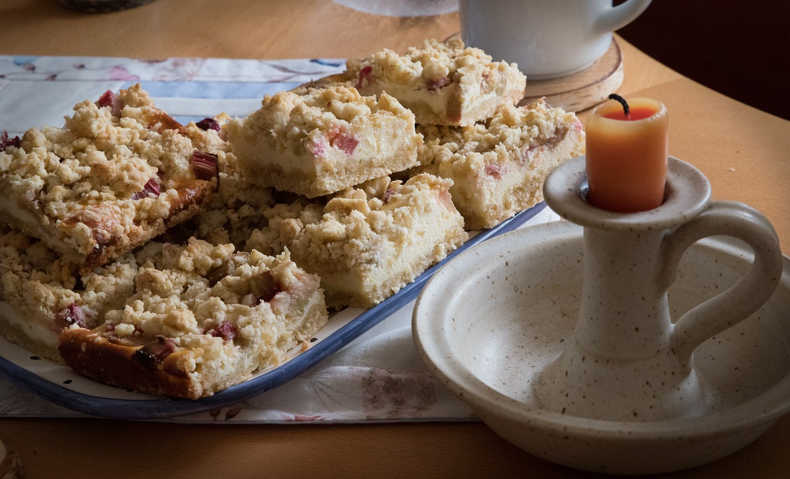

Rhabarberkuchen mit Streusel
1 Std 5 Min
simpel
07.05.2024
Zutaten für:
Zubereitung
Arbeitszeit ca. 20 Minuten
Gesamtzeit ca. 1 Std 5 Minuten
Zuerst heizt Du den Ofen auf 180 Grad Ober- / Unterhitze auf und legst den Boden Deiner Springform mit Backpapier aus. Die Ränder ganz leicht mit Butter einfetten.
Für 8 Portionen reicht eine Springform mit 24 cm Durchmesser.
FÜR DEN STREUSEL-BODEN UND DAS TOPPING
1. Für den Streusel-Boden und das Streusel-Topping vermengst Du mit dem Knethaken der Küchenmaschine, dem Handmixer oder den Händen 300 g Mehl, 150 g kalte Butter und 150 g Zucker, so lange bis sich die Zutaten gut miteinander verbunden haben. Je nach Buttersorte ist der Teig kürmelig bis "sandartig".
2. Danach knetest Du mit der Hand die Masse noch zu Streuseln fest und stellst sie beiseite in den Kühlschrank.
FÜR DEN BELAG
1. Jetzt 800 g Rhabarber gründlich waschen, die Blätter und Stielenden großzügig abschneiden und in schräge, fingerbreite Stücke schneiden. Hinweis: Ich putze meinen Rhabarber nur wie beschrieben und schäle wirklich nur dicke, sehr faserige Stangen. Wenn man Rhabarber schält verliert er nämlich seine schöne rote Farbe. Mehr Infos dazu findest Du oben im Beitrag.
2. 1 TL Butter in einer großen Pfanne bei mittlerer Stufe schmelzen lassen und den Rhabarber hineingeben. Mit 6 EL Zucker bestreuen und diesen darin kurz auflösen lassen.
3. Dann gibst Du 2 EL Speisestärke dazu und lässt das Ganze auf niedriger Stufe 2 Minuten ganz leicht köcheln.
4. In der Zeit Zweidrittel (2/3) der Streuselmenge mit einem Löffel auf dem Boden Deiner Springform verteilen und zu einem kompakten, dichten Boden festdrücken, der keine Lücken oder dünne Stellen aufweist, sonst besteht die Gefahr, dass er durchweicht.
5. Den Rhabarber aus der Pfanne auf dem Boden verteilen und mit 1 Päckchen Vanillezucker bestreuen.
6. Zum Schluss knetest Du mit den Händen den restliche Streuselteig (ca. 1/3) zu beliebig großen Streuseln und gibst sie als Topping oben drauf.
7. Der Streusel Rhabarberkuchen kommt jetzt für 45 Minuten auf der mittleren Schiene in den vorgeheizten Backofen. Du kannst ihn übrigens auch lauwarm essen und es schmeckt sehr gut Sahne oder Vanille-Eis dazu.
8. Ich wünsche Dir mit meinem Rhabarberkuchen Rezept viel Freude und einen guten Appetit!